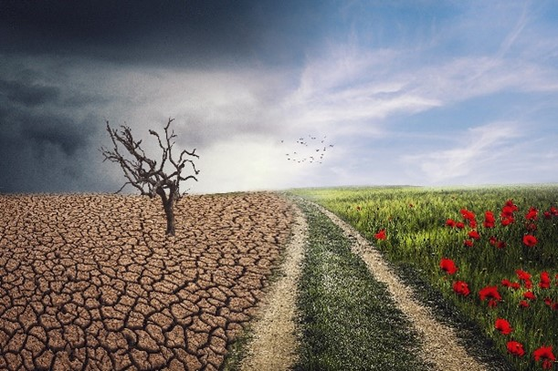

Agriculture is the art and science of cultivating the soil, growing crops and raising livestock. It includes the preparation of plant and animal products for people to use and their distribution to markets. Agriculture provides most of the world's food and fabrics. Food is a basic requirement for every living being. We depend on plant and animals for food. Ancient men began the cultivation of food in a small area and used certain procedures for their management and improvement. This art of cultivation of the crop is called agriculture. In agriculture, there are certain parameters to be considered such as the type of crop, properties of soil, climate etc. Depending upon these parameters, farmers decide which crop is to be cultivated at what time of the year and place. Moreover, to yield a high-quality product, suitable soil, climate and season are not sufficient. It requires a set of procedures which needed to be followed. The measures which are followed to raise crops are called agricultural practices. Different agricultural practices are discussed below.
Before raising a crop, the soil in which it is to be grown is prepared by ploughing, levelling, and manuring. Ploughing is the process of loosening and digging of soil using a plough. This helps in proper aeration of the soil. After ploughing, the soil is distributed evenly and levelled in the process called levelling. The soil is then manured.
Selection of seeds of good quality crop strains is the primary stage of sowing. After the preparation of soil, these seeds are dispersed in the field and this is called sowing. Sowing can be done manually, by hand or by using seed drilling machines. Some crops like paddy are first grown into seedlings in a small area and then transplanted to the main field.
Crops need nutrients to grow and produce yield. Thus, the supply of nutrients at regular intervals is necessary. Manuring is the step where nutritional supplements are provided and these supplements may be natural (manure) or chemical compounds (fertilizers). Manure is the decomposition product of plant and animal wastes. Fertilizers are chemical compounds consisting of plant nutrients and are produced commercially. Apart from providing nutrients to crop, manure replenishes soil fertility as well. Other methods for soil replenishment are vermicompost, crop rotation, planting of leguminous plants.
Irrigation is the supply of water. Sources of water can be wells, ponds, lakes, canals, dams etc. Over irrigation may lead to waterlogging and damage the crop. This frequency and interval between successive irrigation need to be controlled.
Weeds are unwanted plants which grow among crops. They are removed by using weedicides, by manually pulling them with hands and some are removed during soil preparation.
Once the crop is matured, it is cut and gathered, this process is called harvesting. Followed by harvesting, grains are separated from the chaff either by threshing, or manually in small scale (winnowing).
Grains yielded are stored in granaries or bins at godowns for later use or marketing. Therefore, methods of crop protection need to be better. In order to protect grains from pest and rodents- cleaning, drying, fumigation, etc., are done prior to storing. For successful agriculture, proper methods and practices are to be followed.
Farming systems are strategically utilized, according to the locations where they are most suitable. The farming systems that significantly contribute to the agriculture of India are subsistence farming, organic farming, industrial farming. Regions throughout India differ in types of farming they use; some are based on horticulture, ley farming, agroforestry, and many more. Due to India's geographical location, certain parts experience different climates, thus affecting each region's agricultural productivity differently. India is very dependent on its monsoon cycle for large crop yields.
Currently, the country holds the second position in agricultural production in the world. In 2007, agriculture and other industries made up more than 16% of India's GDP. Despite the steady decline in agriculture's contribution to the country's GDP, agriculture is the biggest industry in the country and plays a key role in the socio-economic growth of the country. India is the second-largest producer of wheat, rice, cotton, sugarcane, silk, groundnuts, and dozens more. It is also the second biggest harvester of vegetables and fruit, representing 8.6% and 10.9% of overall production, respectively. The major fruits produced by India are mangoes, papayas, sapota, and bananas. India also has the biggest number of livestock in the world, holding 281 million. In 2008, the country housed the second largest number of cattle in the world with 175 million.
Irrigation is the agricultural process of applying controlled amounts of water to land to assist in the production of crops, as well as to grow landscape plants and lawns, where it may be known as watering. Agriculture that does not use irrigation but instead relies only on direct rainfall is referred to as rain-fed. Irrigation has been a central feature of agriculture for over 5,000 years and has been developed independently by many cultures across the globe.
Irrigation helps to grow agricultural crops, maintain landscapes, and revegetate disturbed soils in dry areas and during periods of less than average rainfall. Irrigation also has other uses in crop production, including frost protection, suppressing weed growth in grain fields and preventing soil consolidation. Irrigation systems are also used for cooling livestock, dust suppression, disposal of sewage, and in mining. Irrigation is often studied together with drainage, which is the removal of surface and sub-surface water from a given location.
There are several methods of irrigation. They vary in how the water is supplied to the plants. The goal is to apply the water to the plants as uniformly as possible, so that each plant has the amount of water it needs, neither too much nor too little. Irrigation can also be understood whether it is supplementary to rainfall as happens in many parts of the world, or whether it is 'full irrigation' whereby crops rarely depend on any contribution from rainfall. Full irrigation is less common and only happens in arid landscapes experiencing very low rainfall or when crops are grown in semi-arid areas outside of any rainy seasons.
Surface irrigation, also known as gravity irrigation, is the oldest form of irrigation and has been in use for thousands of years. In surface (furrow, flood, or level basin) irrigation systems, water moves across the surface of agricultural lands, in order to wet it and infiltrate into the soil. Water moves by following gravity or the slope of the land. Surface irrigation can be subdivided into furrow, border strip or basin irrigation. It is often called flood irrigation when the irrigation results in flooding or near flooding of the cultivated land. Historically, surface irrigation is the most common method of irrigating agricultural land across most parts of the world. The water application efficiency of surface irrigation is typically lower than other forms of irrigation, due in part to the lack of control of applied depths. Surface irrigation involves a significantly lower capital cost and energy requirement than pressurised irrigation systems. Hence it is often the irrigation choice for developing nations, for low value crops and for large fields. Where water levels from the irrigation source permit, the levels are controlled by dikes, usually plugged by soil. This is often seen in terraced rice fields (rice paddies), where the method is used to flood or control the level of water in each distinct field. In some cases, the water is pumped, or lifted by human or animal power to the level of the land.
Surface irrigation is even used to water urban gardens in certain areas, for example, in and around Phoenix, Arizona. The irrigated area is surrounded by a berm and the water is delivered according to a schedule set by a local irrigation district.
Micro-irrigation, sometimes called localized irrigation, low volume irrigation, or trickle irrigation is a system where water is distributed under low pressure through a piped network, in a pre-determined pattern, and applied as a small discharge to each plant or adjacent to it. Traditional drip irrigation uses individual emitters, subsurface drip irrigation (SDI), micro-spray or micro-sprinklers, and mini-bubbler irrigation all belong to this category of irrigation methods.
Drip (or micro) irrigation, also known as trickle irrigation, functions as its name suggests. In this system, water is delivered at or near the root zone of plants, one drop at a time. This method can be the most water-efficient method of irrigation, if managed properly; evaporation and runoff are minimized. The field water efficiency of drip irrigation is typically in the range of 80 to 90 percent when managed correctly. In modern agriculture, drip irrigation is often combined with plastic mulch, further reducing evaporation, and is also the means of delivery of fertilizer. The process is known as fertigation.
Deep percolation, where water moves below the root zone, can occur if a drip system is operated for too long or if the delivery rate is too high. Drip irrigation methods range from very high-tech and computerized to low-tech and labour-intensive. Lower water pressures are usually needed than for most other types of systems, with the exception of low energy centre pivot systems and surface irrigation systems, and the system can be designed for uniformity throughout a field or for precise water delivery to individual plants in a landscape containing a mix of plant species. Although it is difficult to regulate pressure on steep slopes, pressure compensating emitters are available, so the field does not have to be level. High-tech solutions involve precisely calibrated emitters located along lines of tubing that extend from a computerized set of valves.
In sprinkler or overhead irrigation, water is piped to one or more central locations within the field and distributed by overhead high-pressure sprinklers or guns. A system using sprinklers, sprays, or guns mounted overhead on permanently installed risers is often referred to as a solid-set irrigation system. Higher pressure sprinklers that rotate are called rotors and are driven by a ball drive, gear drive, or impact mechanism. Rotors can be designed to rotate in a full or partial circle. Guns are similar to rotors, except that they generally operate at very high pressures of 275 to 900 kPa (40 to 130 psi) and flows of 3 to 76 L/s (50 to 1200 US gal/min), usually with nozzle diameters in the range of 10 to 50 mm (0.5 to 1.9 in). Guns are used not only for irrigation, but also for industrial applications such as dust suppression and logging.
Sprinklers can also be mounted on moving platforms connected to the water source by a hose. Automatically moving wheeled systems known as traveling sprinklers may irrigate areas such as small farms, sports fields, parks, pastures, and cemeteries unattended. Most of these use a length of polyethylene tubing wound on a steel drum. As the tubing is wound on the drum powered by the irrigation water or a small gas engine, the sprinkler is pulled across the field. When the sprinkler arrives back at the reel the system shuts off. This type of system is known to most people as a "water reel" traveling irrigation sprinkler and they are used extensively for dust suppression, irrigation, and land application of waste water. Other travellers use a flat rubber hose that is dragged along behind while the sprinkler platform is pulled by a cable.
We can divide agriculture into two ways, such as traditional and modern, both the ways are different itself and perform different types of farming accordingly. Agriculture aims to provide the living standard by generating income and producing crops, foods, other raw items to the factories/industries, fodder and forage to the livestock and many more things. Therefore, major types of agriculture activities perform many different types of farming and grow all types of agriculture crops.
Shifting agriculture is a moving development that is far-reaching practice. It involves the elimination of forests. The cleared ground is developed for three to five years, or until local greenery and weeds rule it, whichever starts things out. Farmers leave the field for a limited period and clear one more land or region to start other agribusinesses when this occurs. It’s a kind of resource cultivation that is done manually.
Commercial farming is farming where crops and raises livestock to sell crops or food items for making money. It has high demand in the farming sector because Commercial plantations have to export to other countries and also use to make raw materials in the industries. This farming is one of the types of agriculture that are mainly rearing to earn money. It is a pillar of the agriculture economy globally and has a big contribution.
Mixed farming is one of the popular types of cultivation in agriculture that includes growing crops and raising livestock simultaneously. It means the process of mixed farming can grow two-three crops together and also raise livestock with them. The effect of crop rotation increases the dependability of external resources in mixed agriculture. On the same land, they can grow many varieties of crops and also, they can raise poultry aside.
Crop rotation is the practice of planting different crops sequentially on the same plot of land to improve soil health, optimize nutrients in the soil, and combat pest and weed pressure.
For example, say a farmer has planted a field of corn. When the corn harvest is finished, he might plant beans, since corn consumes a lot of nitrogen and beans return nitrogen to the soil. A simple rotation might involve two or three crops, and complex rotations might incorporate a dozen or more.
Terrace farming is very common in hilly regions. There the terrace means steps that are constructed on hills or mountains for crop cultivation. Terrace farming crops are directly connected to the rain that helps to remove the unnecessary soil nutrients and make the crops healthy.
Rice is the most common terrace farming because it requires paddy lands and a flat surface that enables it to keep water stored. Farming on terrace is very effective in the growth of soil and water.
Each region in India has a specific soil and climate that is only suitable for certain types of farming. Many regions on the western side of India experience less than 50 cm of rain annually, so the farming systems are restricted to cultivate crops that can withstand drought conditions and farmers are usually restricted to single cropping. Gujarat, Rajasthan, Punjab, and northern Maharashtra all experience this climate and each region grows such suitable crops like jowar, bajra, and peas. In contrast, the eastern side of India has an average of 100–200 cm of rainfall annually without irrigation, so these regions have the ability to double crop. West Coast, West Bengal, parts of Bihar, U.P. and Assam are all associated with this climate and they grow crops such as rice, sugarcane, jute, and many more.
There are three different types of crops that are cultivated throughout India. Each type is grown in a different season depending on their compatibility with certain weather. Kharif crops are grown at the start of the monsoon until the beginning of the winter, relatively from June to November. Examples of such crops are rice, corn, millet, groundnut, moong, and urad. Rabi crops are winter crops that are sown in October -November months and harvested in February – March. Its typical examples are wheat, boro paddy, jowar, nuts, etc. The third type is Zaid crops which are summer crops. It is sown in February – March and harvested in May – June. Examples are aush paddy, vegetables, and jute.
There is a need for work on cost-effective technologies with environmental protection and on conserving our natural resources
Agriculture in India is livelihood for a majority of the population and can never be underestimated.
Although its contribution in the gross domestic product (GDP) has reduced to less than 20 per cent and contribution of other sectors increased at a faster rate, agricultural production has grown. This has made us self-sufficient and taken us from being a begging bowl for food after independence to a net exporter of agriculture and allied products.